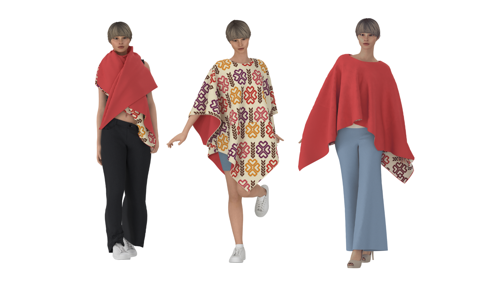

Cruce
Cruce nace de la reinterpretación gráfica de los tejidos de la Mochila Wayuu y el Sombrero Vueltiao. Su patrón se construye a partir de formas geométricas en cruz y módulos escalonados, haciendo alusión al tejido manual, traducido a un lenguaje contemporáneo.

La prenda cuenta con un sistema de cremalleras y un fondo agregado, lo que permite transformarla en cuatro configuraciones: bufanda, poncho, blusa y bolso tipo tsuno bag.
Configuración No. 1
Bufanda
Configuración No. 2
Poncho
Configuración No. 3
Blusa
Configuración No. 4
Bolso